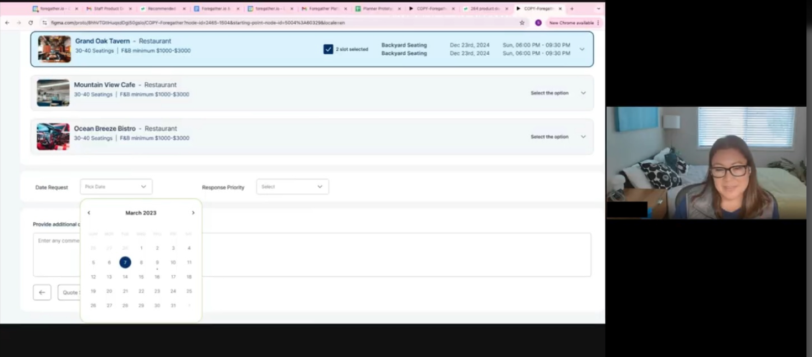
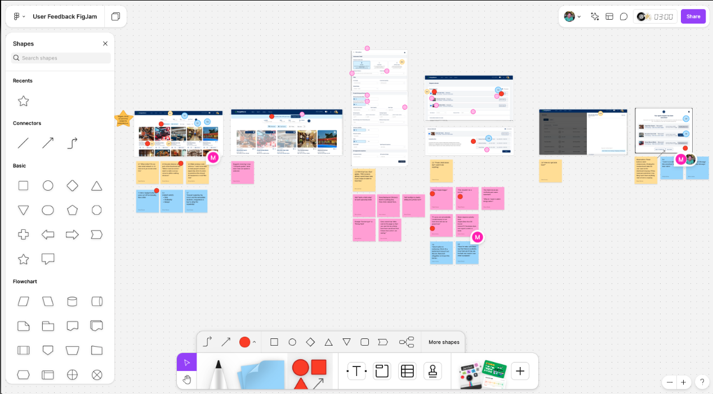
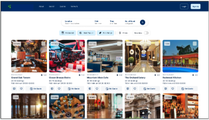
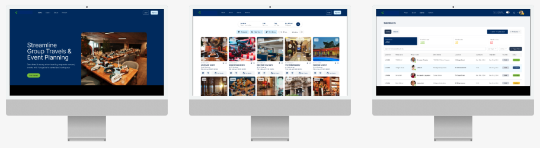

Enter the password to view this case study.
Enhancing corporate event bookings through intelligent AI integration — from concept to live MVP in 90 days.
In early 2025, I joined a pre-seed AI startup as the founding product designer for a B2C events planning platform. The challenge: go from concept to a working application in just 90 days.
I collaborated with another UX contributor and partnered closely with product and engineering. As the only permanent designer, I led the design vision, established the design system, and helped shape how AI could assist users in planning personal events.
The result: a live MVP that enabled users to create structured event plans in under 15 minutes — blending AI speed with human-friendly structure and trust.
As the founding product designer, I:
Together with the other UX contributor, I conducted 5 moderated interviews with frequent corporate event planners (our ICP). We surfaced recurring "jobs to be done":
Key insight: users wanted AI + agency — automation with the ability to adjust.
I conducted moderated interviews with 5 corporate event planners to delve into their experiences and pain points with current booking methods. The selection included participants from various industries to ensure comprehensive feedback.

Many users found existing booking systems to be cumbersome and time-consuming.
A disjointed experience caused by too many tools resulted in increased confusion and anxiety that things would fall through the cracks.Users desired personalized recommendations based on past bookings.
This would enhance their decision-making process. A successful product has to be actionable, not just usable."I want everything in one place."
Seamless syncing was essential for their planning workflow. Integration with calendar tools and the ability to share with others was a high priority.
I explored 3 AI interaction models:
User testing showed a hybrid approach worked best: AI generates a plan → user customizes it → system adapts in real time.
The high-fidelity mockup focused on simplicity and accessibility, incorporating AI-driven features like smart suggestions and easy navigation. We chose a clean aesthetic with intuitive icons and a color palette that aligns with corporate branding. Interactive elements were carefully designed to enhance user engagement while keeping essential information front and center.

Users struggled with the initial navigation of selected venues and needed additional prompting to move forward with the booking process.
Solution: We redesigned the onboarding flow to introduce users gradually to the features. User test findings were tracked and shared with the team.Based on user research findings, I designed a modular event builder covering venues, guests, catering, and timelines. I integrated AI recommendations with transparency patterns — editable fields, cost breakdowns, and correction loops — and built the first design system (components, colors, interactions) to accelerate dev handoff.
A decision was made that we could and should aim to be better than the status quo. As a result, the team made a hard pivot to a totally different type of interface — one that incorporated AI to assist users with the planning experience. An entirely new interface was mocked up in Subframe, a new AI-powered design platform.
